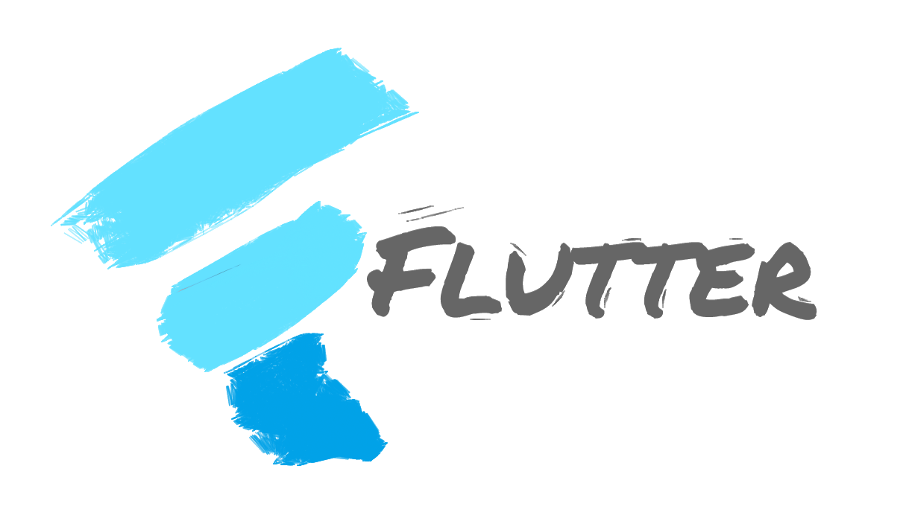

Sory Millimono
Forces
- Motivé par le succès
- Sociable
- Déterminer
- Ponctuel
- Travail en équipe
- Communication
Connaissance
- Microsoft-Word
- Microsoft-Excel
- Management
- Technique bancaire
- Télémarketing
- Blogging
- Mobilisation des ressources
Langue
- Français: Native
- Soussou: Native
- Maninka: Native
- Anglais: Basic
À propos de moi
En tant que chercheur en Intelligence Artificielle et Deep Learning, je me spécialise dans l'évaluation et l'amélioration des méthodes de diagnostic pour la détection précoce du cancer du sein. Mon expertise englobe la bio-informatique, l'imagerie médicale et les technologies de pointe en intelligence artificielle.
Avec une solide formation en bio-informatique et en modélisation des systèmes complexes appliquée à la santé, j'ai acquis des compétences approfondies en développement logiciel et en analyse de données. J'ai une expérience significative dans le développement d'algorithmes de machine learning et de deep learning, dans la création d'applications mobiles, ainsi que dans la création d'applications complètes allant du front-end au back-end.
Compétences
 Deep Learning et Machine Learning
Deep Learning et Machine Learning- Bio-informatique et Imagerie Médicale
 Développement Full Stack
Développement Full Stack Big Data et Cloud Computing
Big Data et Cloud Computing DevOps et Conteneurisation
DevOps et Conteneurisation Analyse et Visualisation des Données
Analyse et Visualisation des Données-  Développement Mobile avec Flutter
 Développement Mobile avec React Native
Développement Mobile avec React Native- Développement Mobile avec Android Studio
Expérience Professionnelle
-
Professeur Titulaire
Université Libre de Guinée & IST Guinée – Conakry
15/10/2023 - 10/02/2024
Cours sur Python pour le Développement Logiciel.
-
Expert Assistant en AI
Orange Digital Center (ODC) Guinée – Conakry
09/08/2023 - 23/09/2023
Assister dans les projets de Computer Vision et du NLP.
-
Professeur Titulaire
Université Mahatma Gandhi de Conakry (UMGC), Guinée – Conakry
12/03/2023 - 22/05/2023
Cours de SQL-server.
-
Ingénieur Informatique
TULIP INDUSTRIE, Guinée – Conakry
03/04/2023 - 03/07/2023
Développement d'applications mobiles, gestion des bases de données, et biométrie par empreinte digitale.
-
Responsable Laboratoire de recherche
ENSAM (E2SN), Rabat – Maroc
25/02/2022 - 01/08/2022
Mise en place de programmes de traitement d’imagerie médicale et déploiement sur le cloud.
Projets
-
Détection des tumeurs cérébrales
Utilisation des réseaux de neurones convolutifs et du transfert de learning.
Voir le projet -
Utilisation de l’IA pour le diagnostic automatique de la Covid19
Mise en place d'un outil de traitement des images médicales.
Voir le projet -
Application de Gestion de Véhicules
Développement d'une application de gestion de flotte de véhicules en Java.
Voir le projet -
Exploratory Data Analysis
Analyse exploratoire des données pour divers projets.
Voir le projet -
Virtualisation et Conteneurisation
Projet utilisant Kubernetes pour la gestion de conteneurs.
Voir le projet -
Big Data avec Hadoop
Projet de gestion de Big Data en utilisant Hadoop.
Voir le projet
Contact
Adresse: 654 rue Desnoyers, Montréal QC
Téléphone: +1 5142504709
Email: millimono64.sm@gmail.com
GitHub: Millimono